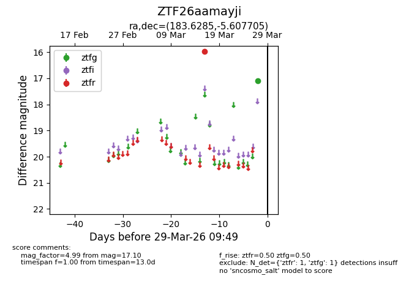
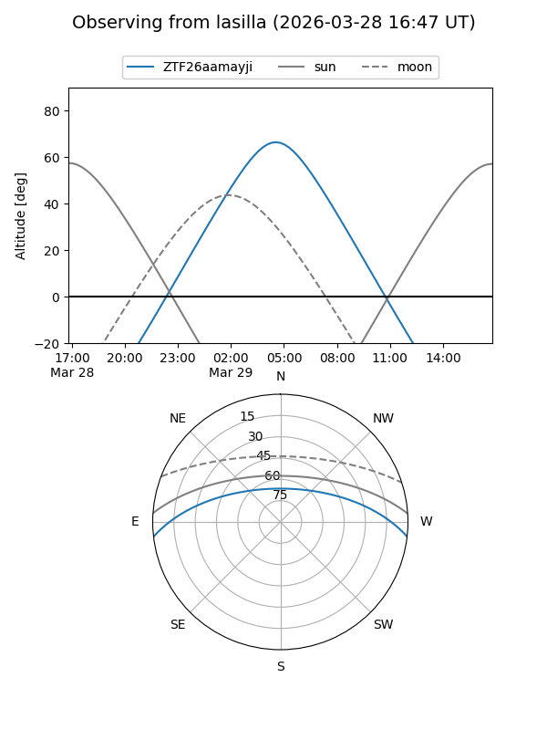
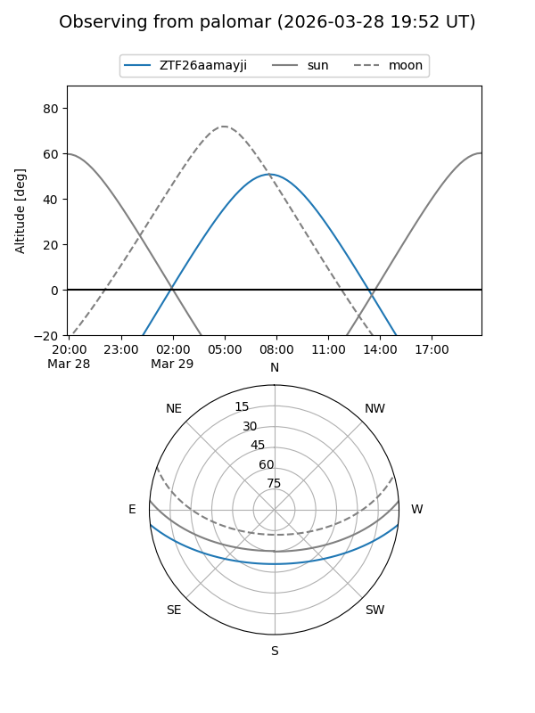

ZTF26aamayji
Target ZTF26aamayji at 2026-03-29 09:52
Aliases and brokers:
FINK: link
Lasair: link
ALeRCE: link
alt names
ZTF26aamayji (ztf,fink_ztf)
Coordinates:
equatorial (ra, dec) = 183.6285,-5.60771
equatorial (HMS+DMS) = 12:14:30.84,-05:36:27.74
galactic (l, b) = (286.3133,+56.06805)
Flags:
Photometry:
last ztfg=17.10, ztfr=15.96
1 ztfg, 1 ztfr detections
Lightcurve

Visibility


Additional plots